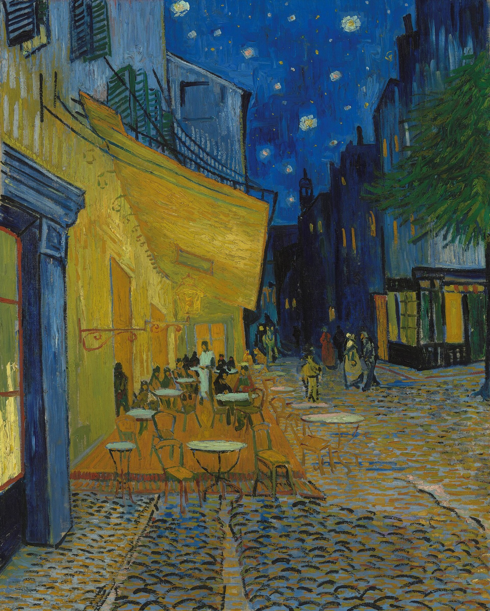
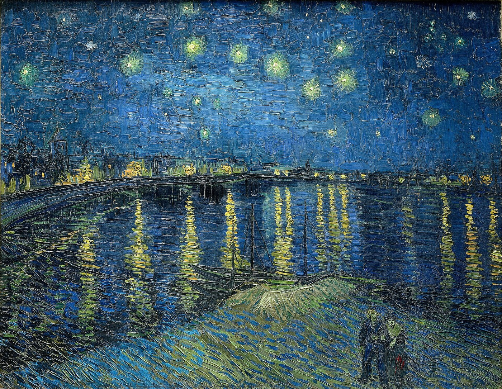
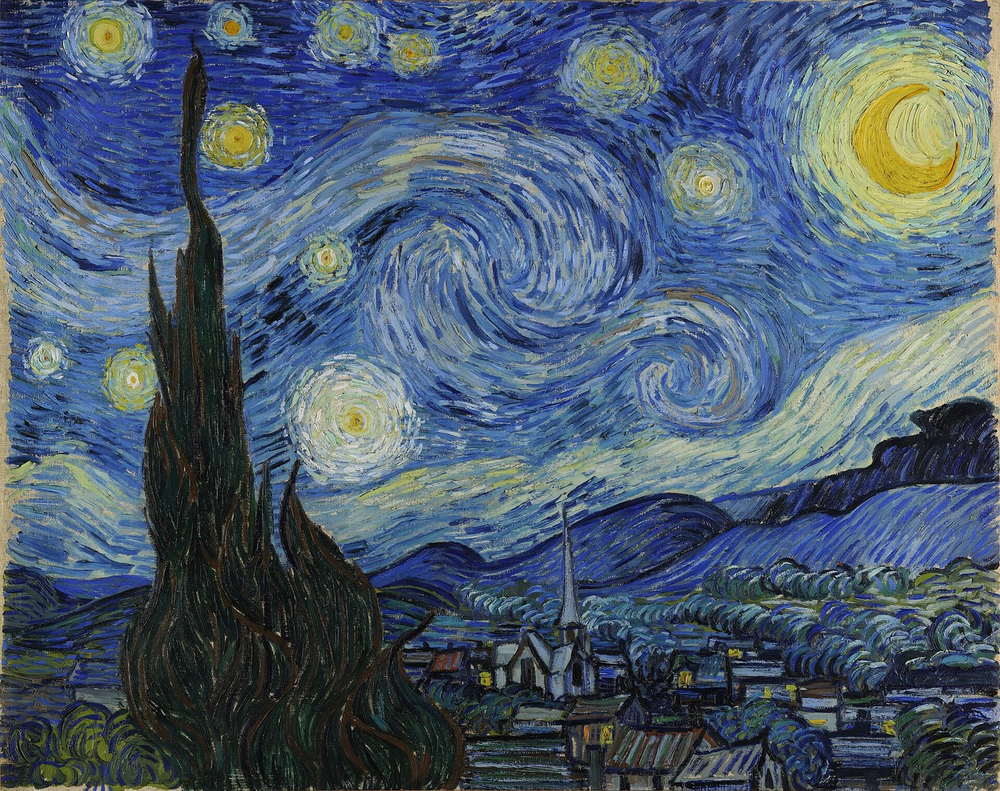

one night in Arles, September 1888 · after Vincent van Gogh

The picture above is the famous one, and it is not Arles. Van Gogh painted The Starry Night in June 1889 at the asylum of Saint-Paul-de-Mausole at Saint-Rémy-de-Provence, which he had entered on 8 May 1889; it shows the view from his window with a village added from imagination, and it is now in the Museum of Modern Art, New York. The stars you have just walked under are the earlier ones. In September 1888 in Arles he painted The Night Café (finished by 8 September; Yale University Art Gallery), Café Terrace at Night (between about 9 and 16 September; Kröller-Müller Museum, Otterlo), The Yellow House and Starry Night Over the Rhône (both by about 29 September; Van Gogh Museum, Amsterdam, and Musée d'Orsay, Paris).
What is real: the plan of the streets from the Place du Forum to the Porte de la Cavalerie, which is today's; the two round towers of the gate and the walls beside it, on their real footprints; the place of the café on the Place du Forum; gas in the streets of Arles (from 1881) and the stone quays of the Rhône (1856–68). The painter's five lines are his own, translated from his letters of that month: “I go outside at night to paint the stars” and “The starry sky, painted at night itself, under a gas jet” (to Theo, about 29 September, letter 691); “There: a painting of night without black” and “It amuses me enormously to paint the night on the spot” (to his sister Willemien, 9 and about 14 September, letter 678); “A place where one can ruin oneself, go mad, commit crimes” (to Theo, 9 September, letter 677). Camille Roulin, the postman's son, was eleven that September (born 10 July 1877); by early December Van Gogh had painted the whole family, the father for the second time.
What is modern or conjectural: the house fronts on the way stand on today's footprints, and north of Place Voltaire much of the quarter was rebuilt after the bombing of 1944; the street names are today's, and only Place du Forum, Place Lamartine and the Avenue de Montmajour were checked for 1888. The Yellow House was wrecked by bombs on 25 June 1944 and pulled down: it, the pink restaurant and the Café de la Gare are built from the paintings and from his own description, in a row whose line is argued from the picture and the avenue's real bearing. Place Lamartine had public gardens and bare yellow earth; how the gardens were laid out is not known, and the lawns, benches and cart are furniture. The café on the Forum was not yellow in 1888 except by gaslight. The gate is built from photographs of its two broken towers as they stand; what joined them in 1888 is not known. The landing on the river bank is shaped to the picture, and the far shore, the bridge of 1875 and the town's skyline are outlines only. The Great Bear hangs over the river in the south-west because he painted it there; it belongs in the north.
What you did: you lit the gas, and the black night turned blue. That is his own account of the café picture, to his sister in letter 678: “There: a painting of night without black. Nothing but beautiful blue and violet and green, and in these surroundings the lit square takes the colour of pale sulphur, of lemon green.” In the same letter he speaks of arranging colours “to make them vibrate and tell by their opposition”. He painted the Rhône picture “at night itself, under a gas jet” (letter 691), which is why the last lamp had to burn before he could begin. That the gas was out, that a boy lit it with a lamplighter's pole, and that the night was ever grey are the game's.
What is invented: the errand, the letter, the postman's words and the townspeople's, and the idea that the three night pictures were made on one night (they took him the best part of a month, and The Yellow House is a daylight picture). The story that he painted by candles stuck in his hat was not found in any letter read for this level and is not used.
Made in admiration of Starry Nightrider, the game that started us off.
Paintings: public domain, via Wikimedia Commons. Letters: Vincent van Gogh, The Letters (vangoghletters.org), read in the original French. Every texture in this level was painted by a script for it; nothing is photographed. Street plan © OpenStreetMap contributors. Sources for every statement: research/FINDINGS.md.